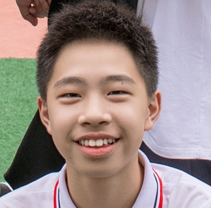

🌐 直面灵性追问的性教育课，与哥哥的神级幽默解围 ✈️
郑承刚思想成长手册 · 暑假篇
| ⏰ 【时间】：2025年08月02日 | 🌍 【地点】：越南 · 暑期相聚 |
| 📱 【情境】：关于成长边界、坦诚与情融的家庭夜课 | 📍 【记录人】：为你们的坦诚与高情商自豪的妈妈 |
🌱 【前情提要与触发事件】：
前几天和你在越南散步时，你突然转过头，无比认真地抛出一个大问题：“妈，精子是怎么进入到女生的身体的？”那一刻，妈妈知道你长大了，是时候做性教育了。妈妈没有回避，而是认真查阅资料、预测了你们可能提问的角度。在这个夏夜，妈妈把大你5岁的哥哥承泽也叫到身边，母子三人正式开启了一堂长达一小时、关于青春期生理、心理变化、性冲动管理以及男女尊重的性教育课。而课程的尾声，却走向了令人惊叹的爆笑闭环。
前几天和你在越南散步时，你突然转过头，无比认真地抛出一个大问题：“妈，精子是怎么进入到女生的身体的？”那一刻，妈妈知道你长大了，是时候做性教育了。妈妈没有回避，而是认真查阅资料、预测了你们可能提问的角度。在这个夏夜，妈妈把大你5岁的哥哥承泽也叫到身边，母子三人正式开启了一堂长达一小时、关于青春期生理、心理变化、性冲动管理以及男女尊重的性教育课。而课程的尾声，却走向了令人惊叹的爆笑闭环。
📖 【性教育课后的小插曲】：妈妈讲解了整整一个小时。听完后，你摸着脑袋，问了妈妈第一个延伸问题……
“妈，我可以谈恋爱了吗？”
“你做好了失恋的准备了吗？你可以承受吗？如果准备好了，我想应该就可以恋爱了。”
“……妈，你有性冲动吗？”
😅 （我的个乖乖！妈妈绝对没想到你会扔出这么一个回马枪，气氛一时间有些微妙的尴尬。这时候，我们的大聪明哥哥承泽一眼看穿了妈妈的局促，瞬间挺身而出——）

“妈妈说了，正常的人都有性冲动的。妈是个正常的人，所以是有性冲动的。”
“那妈妈性冲动了怎么搞？” （问题越来越深奥，但足见你在认真思考）
“妈妈说了，要管理好性冲动，可以看书、打球、做其他的事。我想妈妈一定是追剧，看打日本鬼子的剧！”
“对的，就是这样！” （长舒一口气，母子三人笑成一团）
🧠 【便签批注 · 深刻的独立思考与神级手足默契】
这场原本可能让绝大多数家庭陷入尴尬的对话，却在那个夏夜变成了我们母子三人最耀眼的智慧高光：
1. 承刚的打破砂锅问到底：你的追问虽然让人措手不及，但在妈妈眼里，这恰恰是**极其高级、纯粹的求知欲**。你没有把“性”当成不可言说的羞耻，而是把它当成一个严谨的生命科学去推导、提问。从“能不能恋爱”到“怎么管理冲动”，你展示了知其所以然的深度思考力。
2. 哥哥承泽的满分情商与神助攻：哥哥的表现简直太让妈妈惊艳了！他不仅把妈妈讲授的逻辑死死记住（正常人都有冲动 -> 妈妈是正常人 -> 妈妈也有），更在关键时刻用“看打鬼子剧”这个神级幽默，既完美保护了妈妈的隐私和面子，又给了你一个绝对合乎科学逻辑的具象化答案。这种手足之间的默契和哥哥的细腻共情，是家庭里最宝贵的财富。
1. 承刚的打破砂锅问到底：你的追问虽然让人措手不及，但在妈妈眼里，这恰恰是**极其高级、纯粹的求知欲**。你没有把“性”当成不可言说的羞耻，而是把它当成一个严谨的生命科学去推导、提问。从“能不能恋爱”到“怎么管理冲动”，你展示了知其所以然的深度思考力。
2. 哥哥承泽的满分情商与神助攻：哥哥的表现简直太让妈妈惊艳了！他不仅把妈妈讲授的逻辑死死记住（正常人都有冲动 -> 妈妈是正常人 -> 妈妈也有），更在关键时刻用“看打鬼子剧”这个神级幽默，既完美保护了妈妈的隐私和面子，又给了你一个绝对合乎科学逻辑的具象化答案。这种手足之间的默契和哥哥的细腻共情，是家庭里最宝贵的财富。
💖 【妈妈心语】
亲爱的弟弟、亲爱的阿泽，当你们18岁或更长大的时候，再看到这段爆笑的记录，妈妈希望你们能由衷地为我们的坦诚感到骄傲。
弟弟，谢谢你愿意把心里最隐秘的对生命的好奇，毫无保留地讲给妈妈听。妈妈想告诉你，性从来不是肮脏的，它是爱与生命最自然的流动。当你问妈妈“我可以谈恋爱了吗”，妈妈的回答永远不变：只要你拥有了能对另一个人负责的肩膀，也拥有了能稳稳接住失恋痛苦的承受力，妈妈就会全心全意祝福你的爱情。
阿泽，妈妈也要谢谢你。那一夜你坐在旁边，像个从容的小骑士一样，用你惊人的敏锐和幽默替妈妈“挡了子弹”。你不仅把知识听懂了，还学会了用善意和换位思考去照顾妈妈的情绪。你们知道吗？妈妈天天在外面拼搏，可一回到家看到你和哥哥如此健康、如此诚实、又如此充满默契和幽默感，妈妈觉得在越南所有的辛苦，都变成了最甜的糖。
请记住那个夏夜：我们不逃避问题，我们坦荡直面，我们用爱与幽默轻松拿捏一切尴尬。你们是妈妈这辈子最棒的儿子！
弟弟，谢谢你愿意把心里最隐秘的对生命的好奇，毫无保留地讲给妈妈听。妈妈想告诉你，性从来不是肮脏的，它是爱与生命最自然的流动。当你问妈妈“我可以谈恋爱了吗”，妈妈的回答永远不变：只要你拥有了能对另一个人负责的肩膀，也拥有了能稳稳接住失恋痛苦的承受力，妈妈就会全心全意祝福你的爱情。
阿泽，妈妈也要谢谢你。那一夜你坐在旁边，像个从容的小骑士一样，用你惊人的敏锐和幽默替妈妈“挡了子弹”。你不仅把知识听懂了，还学会了用善意和换位思考去照顾妈妈的情绪。你们知道吗？妈妈天天在外面拼搏，可一回到家看到你和哥哥如此健康、如此诚实、又如此充满默契和幽默感，妈妈觉得在越南所有的辛苦，都变成了最甜的糖。
请记住那个夏夜：我们不逃避问题，我们坦荡直面，我们用爱与幽默轻松拿捏一切尴尬。你们是妈妈这辈子最棒的儿子！
🎨 【互动留白 · 兄弟俩的时光机】
📝 弟弟、阿泽，现在已经长成英俊少年（或者顶天立地的男子汉）的你们，看到当年这段关于“性冲动与打鬼子剧”的绝妙对话，有没有哈哈大笑？在这里互相给对方写一句话，或者签个名吧！